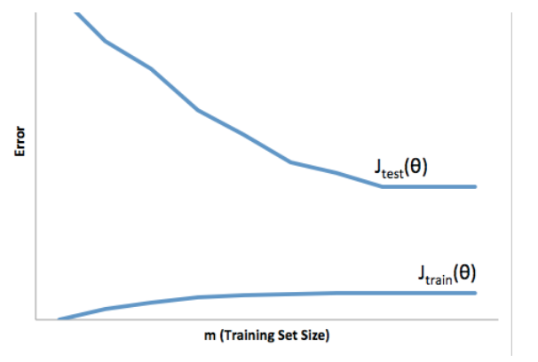

Quiz Advice for Applying machine learning
Q1
You train a learning algorithm, and find that it has unacceptably high error on the test set. You plot the learning curve, and obtain the figure below. Is the algorithm suffering from high bias, high variance, or neither?

- [ ] high bias
- [x] high variance
train error low, test error high
- [ ] none
Q2
Suppose you have implemented regularized logistic regression to classify what object is in an image (i.e., to do object recognition). However, when you test your hypothesis on a new set of images, you find that it makes unacceptably large errors with its predictions on the new images. However, your hypothesis performs well (has low error) on the training set. Which of the following are promising steps to take? Check all that apply.
- [x] Get more training examples.
- [ ] Try adding polynomial features.
- [ ] Use fewer training examples.
- [x] Try using a smaller set of features.
overfitting, high variance problem.
Q3
Suppose you have implemented regularized logistic regression to predict what items customers will purchase on a web shopping site. However, when you test your hypothesis on a new set of customers, you find that it makes unacceptably large errors in its predictions. Furthermore, the hypothesis performs poorly on the training set. Which of the following might be promising steps to take? Check all that apply.
- [x] Try decreasing the regularization parameter λ.
overregularizing resulting in poor fit on training set
- [x] Try adding polynomial features.
more complex function to better fit training data
- [ ] Try evaluating the hypothesis on a cross validation set rather than the test set.
no effect on test set errors
- [ ] Use fewer training examples.
..reduces overfitting but it's underfit
Q4
Which of the following statements are true? Check all that apply.
- [x] Suppose you are training a regularized linear regression model. The recommended way to choose what value of regularization parameter λ to use is to choose the value of λ which gives the lowest cross validation error.
- [x] The performance of a learning algorithm on the training set will typically be better than its performance on the test set.
- [ ] Suppose you are training a regularized linear regression model.The recommended way to choose what value of regularization parameter λ to use is to choose the value of λ which gives the lowest training set error.
- [ ] Suppose you are training a regularized linear regression model. The recommended way to choose what value of regularization parameter λ to use is to choose the value of λ which gives the lowest test set error.
Q5
Which of the following statements are true? Check all that apply.
- [x] When debugging learning algorithms, it is useful to plot a learning curve to understand if there is a high bias or high variance problem.
gives you an idea
- [x] A model with more parameters is more prone to overfitting and typically has higher variance.
more parameters, more complex function, more overfitting
- [ ] If a neural network has much lower training error than test error, then adding more layers will help bring the test error down because we can fit the test set better.
def not
- [x] If a learning algorithm is suffering from high bias, only adding more training examples may not improve the test error significantly.
true